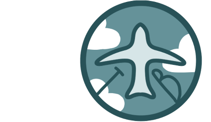
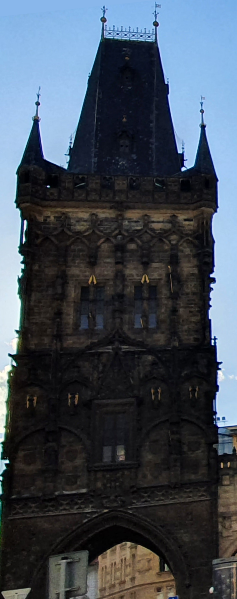

MIJN TRAVELBLOG
-

Welkom op de TravelBlog van de zomer van 2022, geschreven en gecodeerd door Mara de Bruijn. In mei 2022 heb ik mijn eindexamen VWO gehaald, en ben ik meerdere keren op reis naar het buitenland geweest. Het leek me erg leuk om hier een soort blog over te schrijven! In totaal ben ik naar drie landen geweest; Frankrijk, Italië, en Tsjechië. Ik heb het super erg naar mijn zin gehad deze zomer, en ik hoop dat degene die dit leest een beetje van mijn plezier mee krijgt!

Een beetje over mij: Ik ben Mara de Bruijn, ik ben momenteel 19 jaar oud en ik studeer Communicatie en Multimedia Design op de Hogeschool van Amsterdam. Ik heb anderhalf jaar in Ierland gewoont, en ik ben er daar achter gekomen hoeveel ik van reizen hou. Toen ik terug naar Nederland kwam, besloot ik elke zomer wel ergens nieuw heen te gaan. Ik heb me hier ook dit jaar zeker aan gehouden! Naast de drie grote steden waar ik het merendeel van mijn zomervakantie heb doorgebracht, ben ik ook in Duitsland geweest om een concert bij te wonen, Friesland om een vriendin te bezoeken, en nog even over de Belgische grens voor een weekendje weg. Dit ga ik nog een paar jaar vol houden!- 